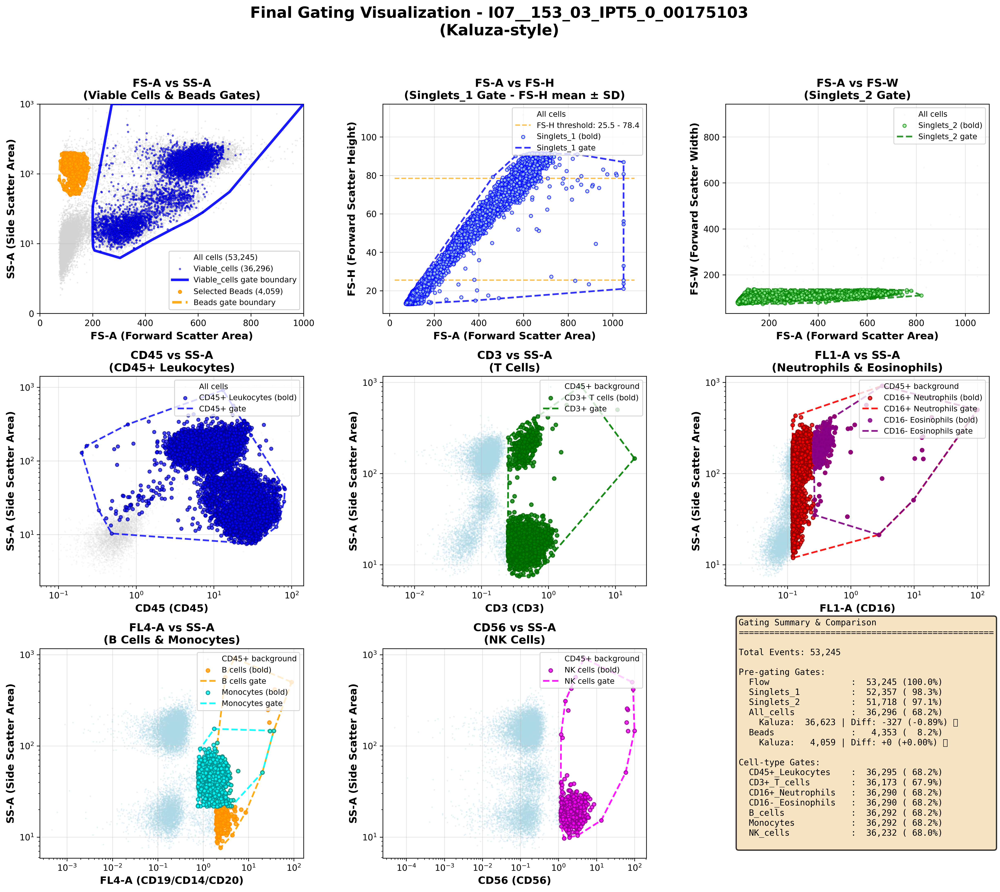
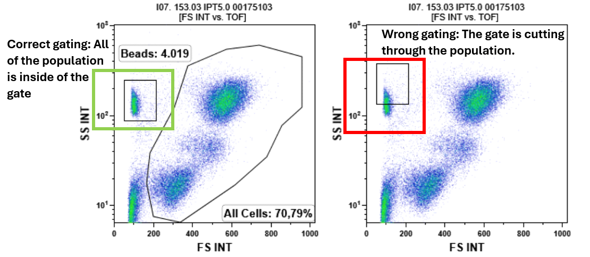

HEALTHCARE AI · BIOMEDICAL MACHINE LEARNING · ONGOING
Automated Flow Cytometry Gating
Developing an end-to-end machine learning pipeline for automated analysis of flow cytometry data, with the goal of reproducing expert-style gating in a more scalable and reproducible workflow.
Overview
This project focuses on building a machine learning workflow for automated flow cytometry gating. The broader goal is to support more consistent and scalable analysis of high-dimensional biomedical data.
The work combines data preprocessing, visualisation, machine-learning-based prediction, and comparison with expert-defined gating patterns.
Problem
Manual flow cytometry gating is time-consuming and requires domain expertise. Repeating the same analysis across many samples can also make it difficult to maintain consistency.
This project explores how a reproducible computational pipeline can support or automate parts of that process.
My role
I work on the machine learning and data-processing pipeline, including preprocessing, representation of cytometry data for modelling, generation of analysis-ready inputs, visualisation, and evaluation of model outputs.
Approach
- Process raw flow cytometry measurements
- Prepare analysis-ready representations of the data
- Generate visual and model-friendly inputs
- Develop automated gating predictions
- Compare results against expert-style gating outputs
The project emphasizes reproducibility, clear workflows, and meaningful visual comparison between automated outputs and expert-guided analysis.
Visual examples


Why it matters
Automated and reproducible gating workflows can reduce manual effort, improve consistency, and support larger-scale biomedical data analysis.
Current status
This is an ongoing research project. The pipeline is under active development, with current work focused on improving data preparation, refining the gating workflow, and strengthening model evaluation.
Next steps
- Improve training data quality
- Expand the number of analyzed samples
- Refine automated gating predictions
- Strengthen validation against expert analysis